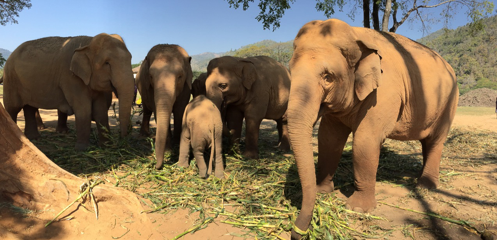
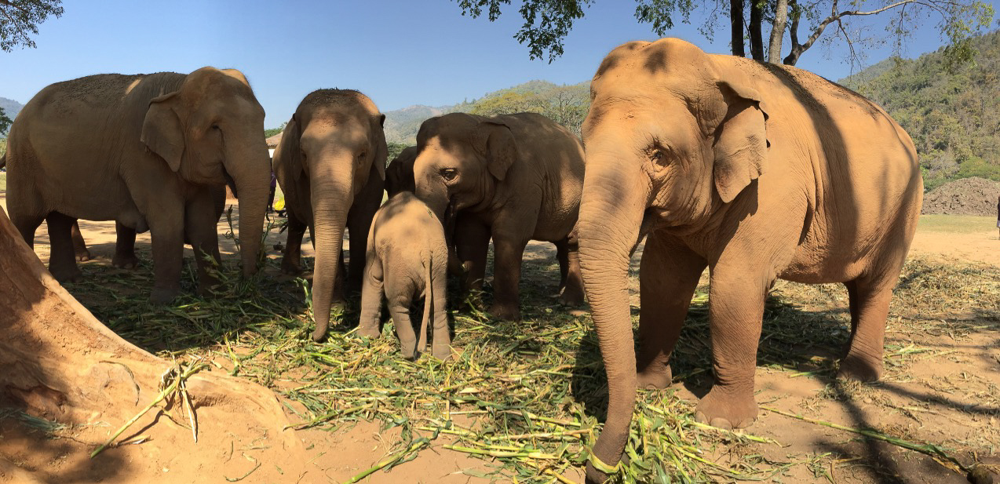
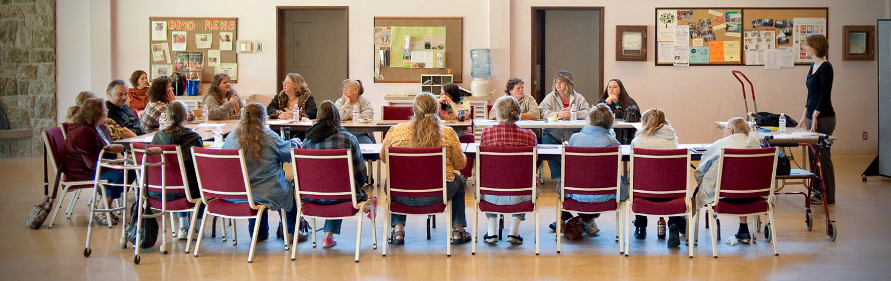

Full Stack Software Developer
In the last 4 months alone, I have built over 40 apps and websites. As a software developer, and as a person, I am intrinsically motivated by curiosity, a desire to always be learning and growing, and a passionate commitment to the mission of the organizations I work for. I have a long history of exceeding professional goals, leading successful teams, and have a positive attitude toward change and challenge. I love solving problems strategically.
Front End Development with:
- React
- Redux
- Vue
- Plain JS
- Webpack
- PostCSS
Back End Development with:
- Node
- Express
- MongoDB
- Mongoose
- PostgreSQL
Test Driven Development with:
- Jest
When I'm not coding
I go on adventures...
 

...and I work to make a difference in my community.
